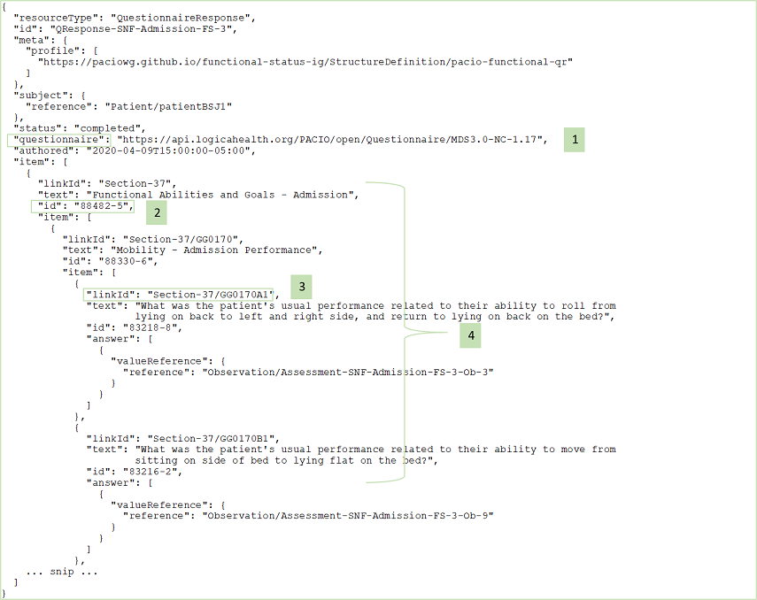

PACIO Functional Status Implementation Guide - Local Development build (v0.1.0). See the Directory of published versions
Profile Highlights and Guidance
- Resource Profile: PACIOfunctionalQuestionaireResponse
- Resource Profile: BundledFunctionalStatus
- Resource Profile: FunctionalStatus
- Resource Profile: PriorLevelOfFunction
- Resource Profile: UseOfDevice
- Data Exchange Guidance and Examples
- PACIOfunctionalQuestionaireResponse – Mobility Example
- BundledFunctionalStatus – Mobility Admission Example
- BundledFunctionalStatus – Mobility Discharge Goal Example
- BundledFunctionalStatus – Mobility Discharge and Device Used Example
- BundledFunctionalStatus – Self-Care Admission Example
- PriorLevelOfFunction – Prior Level of Function Example
This implementation guide provides a set of resource profiles to define how information should be packaged and retrieved in the exchange of PAC assessment data. In the following sections the highlights of the key fields of each profile are presented and guidance for building profile instances is provided.
A note on the use of “Must Support” in the Implementation Guide: For profiles defined in other IGs, the meaning of “Must Support” is established in the defining IG. For profiles defined in this IG, “Must Support” will conform with US Core definition.
Resource Profile: PACIOfunctionalQuestionaireResponse
This resource profile is intended to be used for data exchange of a completed, or sections of a completed, post-acute care (PAC) assessment. The PACIOfunctionalQuestionaireResponse resource also preserves the structure of the PAC assessment questionnaire to provide context for the PACIO observation-based information and is derived from the FHIR resource QuestionnaireResponse.
| Key Fields to Highlight | Description & Constraints |
|---|---|
| questionnaire | A URL pointing to the file of the Questionnaire that defines and organizes the questions for which answers are being provided. |
| subject | A required field constrained to Reference(Patient)—since the focus is on data exchange with patient assessment data. |
| item.id | This field is chosen to contain the code of a section title or an observation question. For example, the LOINC code ‘83218-8.’ |
| item.linkId | This field should contain the ‘linkId’ of the corresponding section title or question from the Questionnaire. |
| answer.value | This field is constrained to Reference(Observation). |
| Item[*].item | The nested questionnaire response items should show the same nesting structure as presented in the Questionnaire. |
Resource Profile: BundledFunctionalStatus
This resource profile is intended to be used for data exchange of a point in time bundle of functional status observations from a single post-acute care (PAC) assessment. It is derived from the FHIR resource Observation.
| Key Fields to Highlight | Description & Constraints |
|---|---|
| event-location | A “must support” extension added to the Observation resource for storing the Reference(Location) to indicate where the observation event occurred. |
| device-patient-used | A “must support” extension added to the Observation resource for storing the Reference(UseOfDevice) to specify one or more devices used by a patient during a functional status assessment. |
| category | A required field with 'extensible' binding to the code system https://terminology.hl7.org/1.0.0/ValueSet-observation-category.html. This field should contain the value ‘survey’ for PAC assessment. |
| code | A required field with ‘extensible’ binding to the LOINC code system http://loinc.org/. |
| subject | A required field constrained to Reference(Patient)—since the focus is on data exchange with patient assessment data. |
| effective | This field, limited to the type dateTime or Period only, indicates the time/time period for the assessment. |
| performer | At least one ‘performer’ is required to be present to indicate who is responsible for the observation. |
| value | This field can only be of the type CodeableConcept. In the case of an assessment with a summary score, for example, this field may appropriately be used to contain the score value. |
| hasMember | This field points to the individual observation instances included in the assessment. |
| derivedFrom | This field points to a functionalQuestionnaireResponse instance. |
Resource Profile: FunctionalStatus
This resource profile is intended to be used for data exchange of a single functional status observation included in a post-acute care (PAC) assessment. It is derived from the FHIR resource Observation.
| Key Fields to Highlight | Description & Constraints |
|---|---|
| event-location | A “must support” extension added to the Observation resource for storing the Reference(Location) to indicate where the observation event occurred. |
| code | A required field with ‘extensible’ binding to the LOINC code system http://loinc.org/. |
| subject | A required field constrained to Reference(Patient)—since the focus is on data exchange with patient assessment data. |
| effective | This field, limited to the type dateTime only, indicates the time for the observation. |
| performer | At least one ‘performer’ is required to be present to indicate who is responsible for the observation. |
| value | This field can only be of the type CodeableConcept. |
| component.code | This is a required field, if it is used, to hold the LOINC code or text value of a column header (for the purpose of grouping answers under a heading and displaying side-by-side columns). |
| component.value | This field, if it is used, contains the answer to the (associated) observation question. |
| derivedFrom | This field points to a functionalQuestionnaireResponse instance. |
Resource Profile: PriorLevelOfFunction
This resource profile is intended to be used for the exchange of prior level of function data when formal functional assessments are not available. It is derived from the FHIR resource Observation.
| Key Fields to Highlight | Description & Constraints |
|---|---|
| event-location | A “must support” extension added to the Observation resource for storing the Reference(Location) to indicate where the observation event occurred. |
| assistance-required | A “must support” extension added to the Observation resource to provide indication of 'independent' vs. 'assistance needed'. |
| text | A “must support” field and to be used as text summary of the prior level of function for the patient. |
| code | This required field has the fixed value of the LOINC code 10158-4 "History of Functional status Narrative". |
| subject | A required field constrained to Reference(Patient)—since the focus is on data exchange with patient assessment data. |
| effective | This required field, limited to the type dateTime or Period only, indicates the time/time-period for the observation. |
| performer | At least one ‘performer’ is required to be present to indicate who is responsible for the observation. |
| value | Optional field with the type CodeableConcept. |
Resource Profile: UseOfDevice
This resource profile is intended to be used for specifying a device used by a patient during a functional status assessment. It is derived from the FHIR resource DeviceUseStatement.
| Key Fields to Highlight | Description & Constraints |
|---|---|
| subject | A required field constrained to Reference(Patient)—since the focus is on data exchange with patient assessment data. |
| device | This field is required and points to a specific device used by patient during assessment. |
Data Exchange Guidance and Examples
The PACIO data model as expressed in the resource profiles is designed to be flexible so as to facilitate the exchange of a variety of types of PAC assessment data. The key to effective data exchange and searching of assessment data is the use of content standards. Therefore, it is paramount that nationally accepted, standardized coding systems such as LOINC and SNOMED are used in specifying assessment data elements.
In the following set of examples, we provide guidance for using specific codes and conventions for constructing profile instances for data exchange. Although we reference a number of particular PAC patient/resident assessment instruments and provide examples to show how those particular types of assessment data can be exchanged, we do not endorse any of those assessment instruments over other assessment instruments that we have not mentioned. Our intention is to demonstrate the flexibility and adequacy of the PACIO data model, rather than to suggest the best types of functional assessment data for clinicians to use.
PACIOfunctionalQuestionaireResponse – Mobility Example

Guidance and Notes:
- The ‘questionnaire’ field is the URL pointing to the file of the questionnaire that defines and organizes the questions for which answers are being provided.
- Use ‘id’ field to indicate the code of a section title or an observation question. For example, the LOINC code ‘88482-5.’
- Each ‘linkId’ field should match the ‘linkId’ of the corresponding section title or question from the questionnaire.
- The nesting structure of the ‘item’ fields should correspond to the nesting structure as showed in the questionnaire.
BundledFunctionalStatus – Mobility Admission Example

Guidance and Notes:
- Here is how the ‘event-location’ extension is used to point to a FHIR Location resource where the observation event occurred.
- Use the right LOINC code to indicate the particular kind of functional assessment. In this case the LOINC code ‘88330-6’ is used to indicate ‘Mobility - Admission Performance’.
- The ‘category’ field should contain the value ‘survey’ for a PAC assessment.
BundledFunctionalStatus – Mobility Discharge Goal Example
Guidance and Notes:
- Use the right LOINC code to indicate the particular kind of functional assessment. In this case the LOINC code ‘85056-0’ is used to indicate ‘Mobility - Discharge Goal’.
- Use multiple ‘performer’ fields to provide references to FHIR Practitioner, PractitionerRole, and Organization resource instances.
BundledFunctionalStatus – Mobility Discharge and Device Used Example
Guidance and Notes:
- Here is how the ‘device-patient-used’ extension is used to point to a UseOfDevice resource to specify a device used by the patient during assessment.
- Use the right LOINC code to indicate the particular kind of functional assessment. In this case the LOINC code ‘88331-4’ is used to indicate ‘Mobility - Discharge Performance’.
BundledFunctionalStatus – Self-Care Admission Example

Guidance and Notes:
- Use the right LOINC code to indicate the particular kind of functional assessment. In this case the LOINC code ‘83233-7’ is used to indicate ‘Self-Care - Admission Performance’.
- An assessment with more than one observation questions would have a number of ‘hasMember’ elements, each of which would point to an observation in the assessment.
- The ‘derivedFrom’ points back to the PACIOfunctionalQuestionaireResponse resource which provides context and structure for the observation-based information.
PriorLevelOfFunction – Prior Level of Function Example
Guidance and Notes:
- Use the extension to provide indication of ‘independent’ vs. ‘assistance needed’.
- Text summary of the prior level of function for the patient.